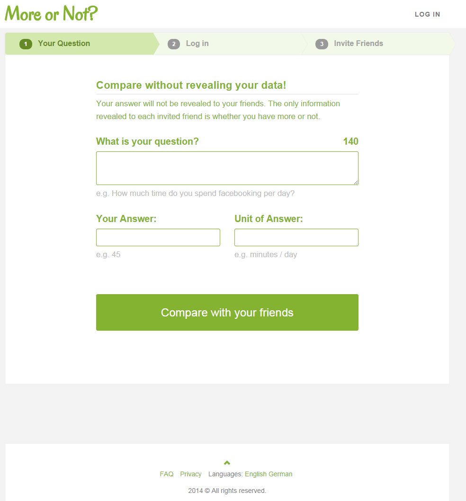
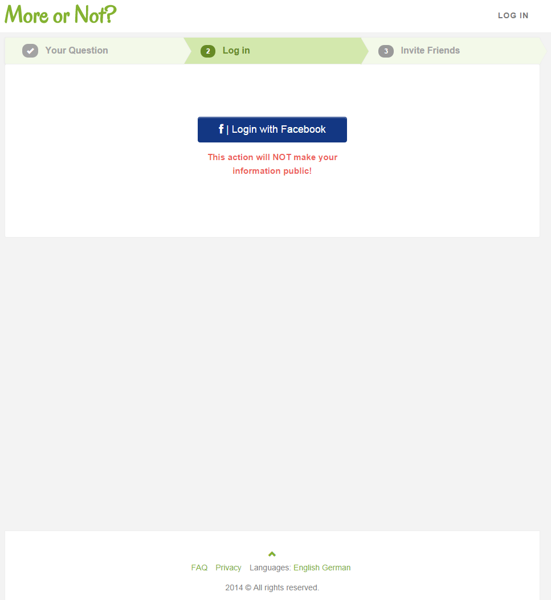
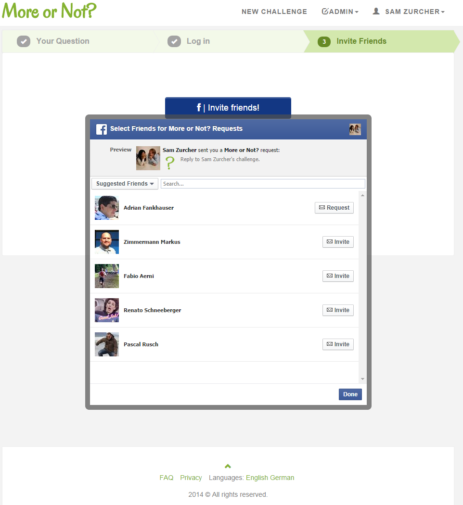
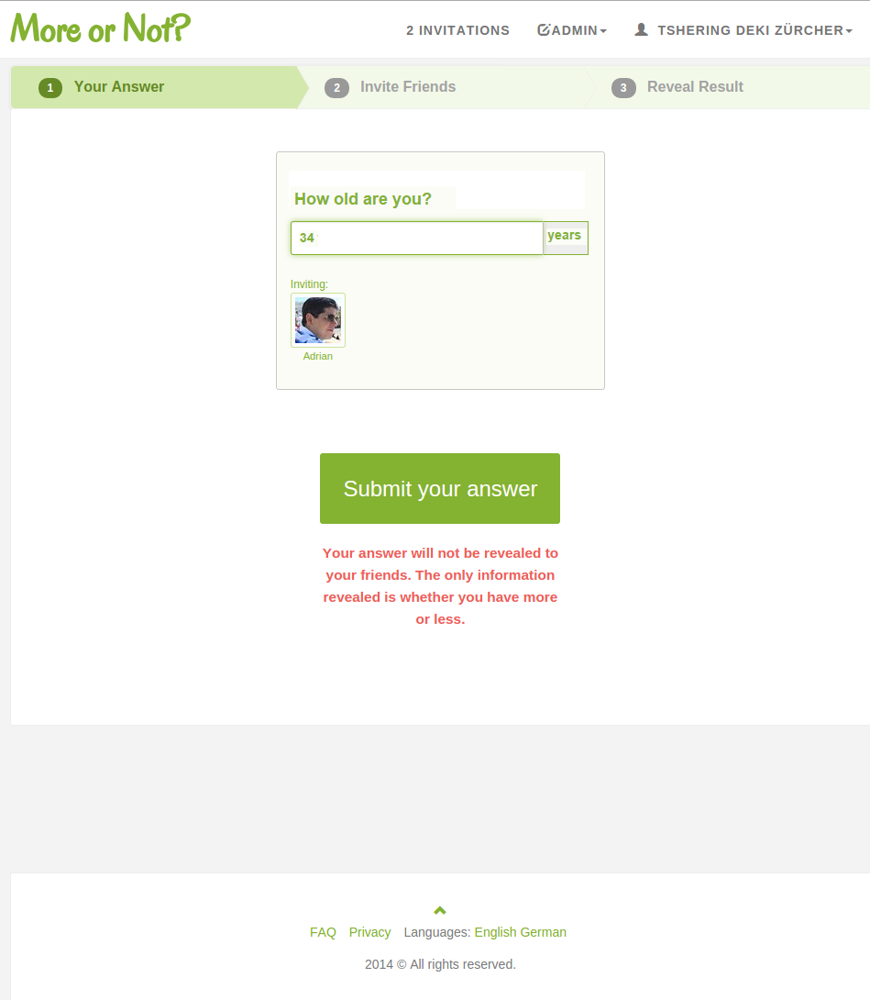
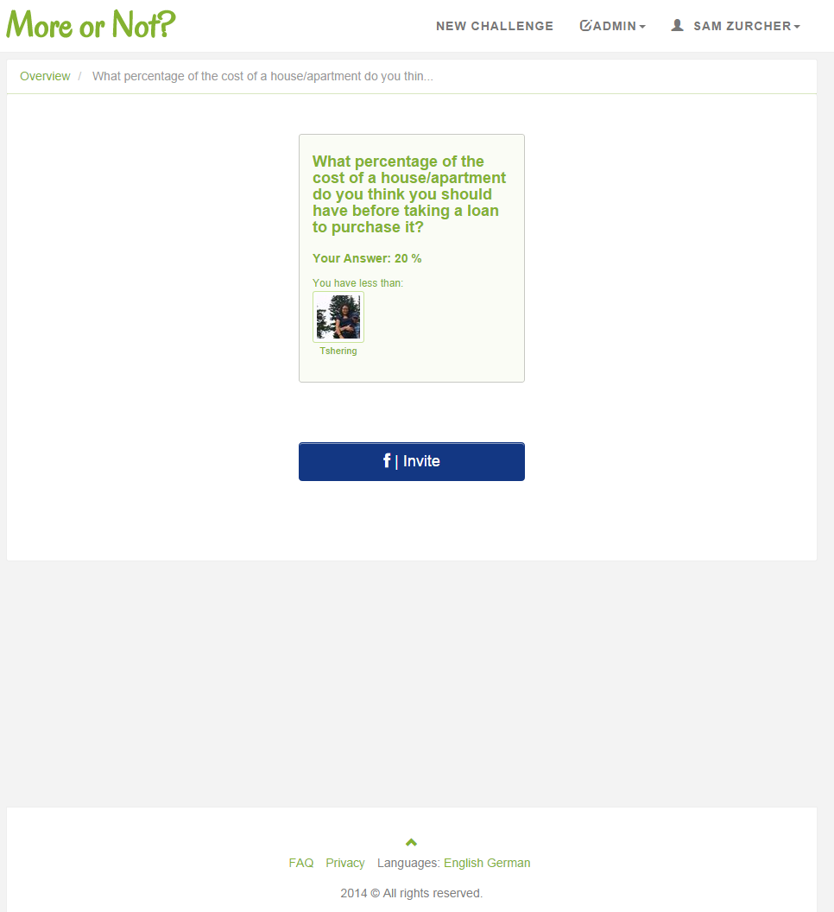
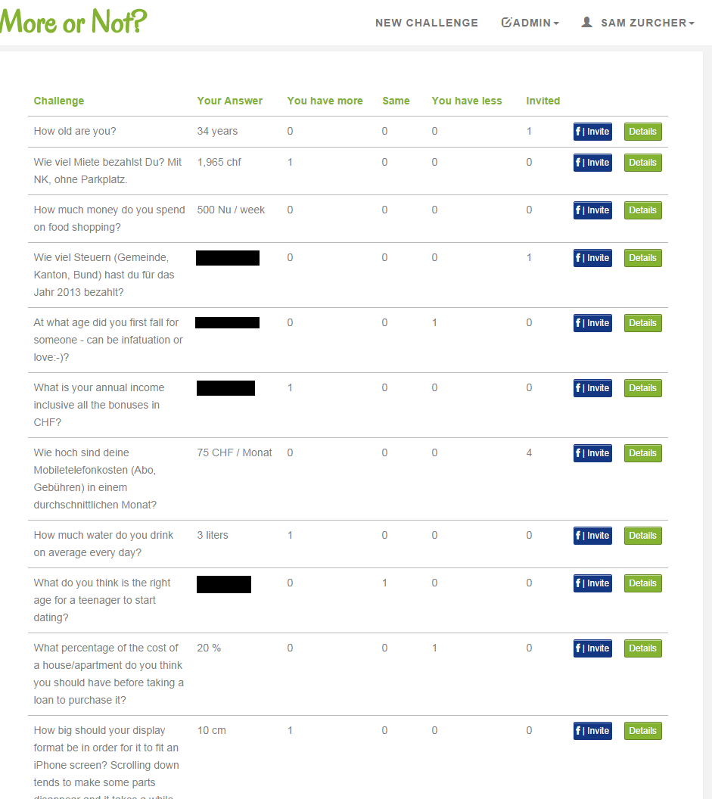
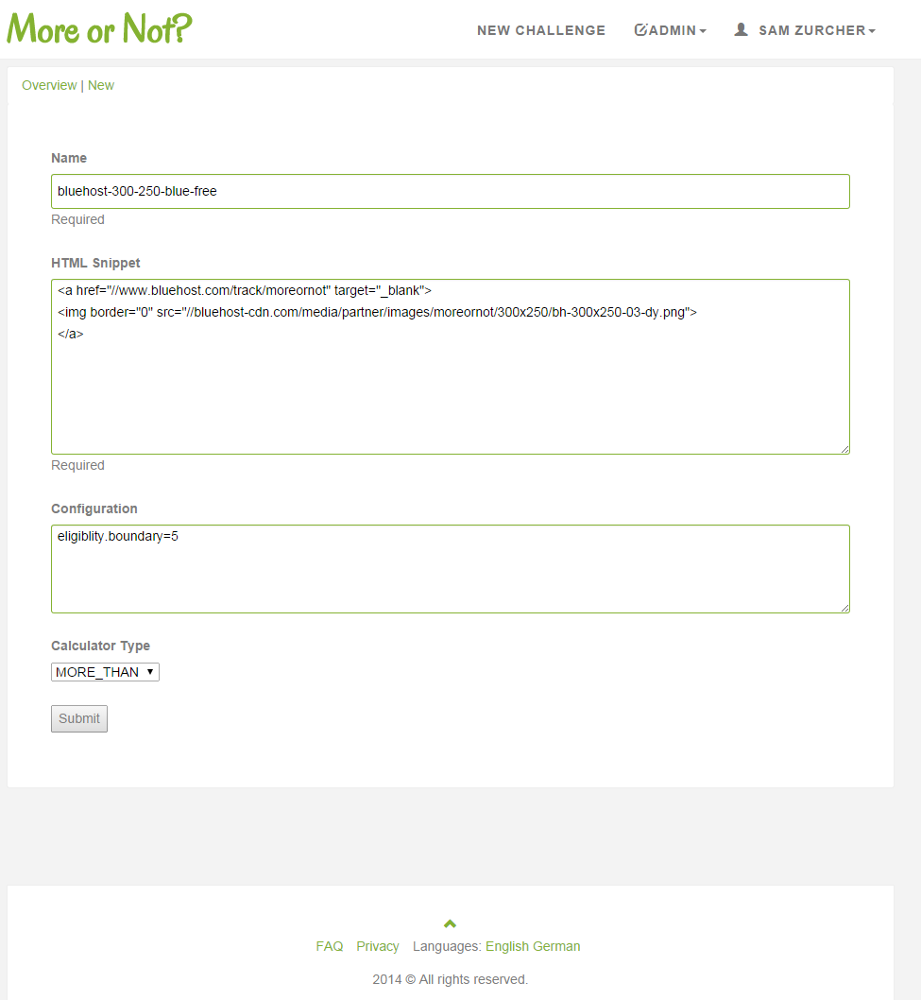
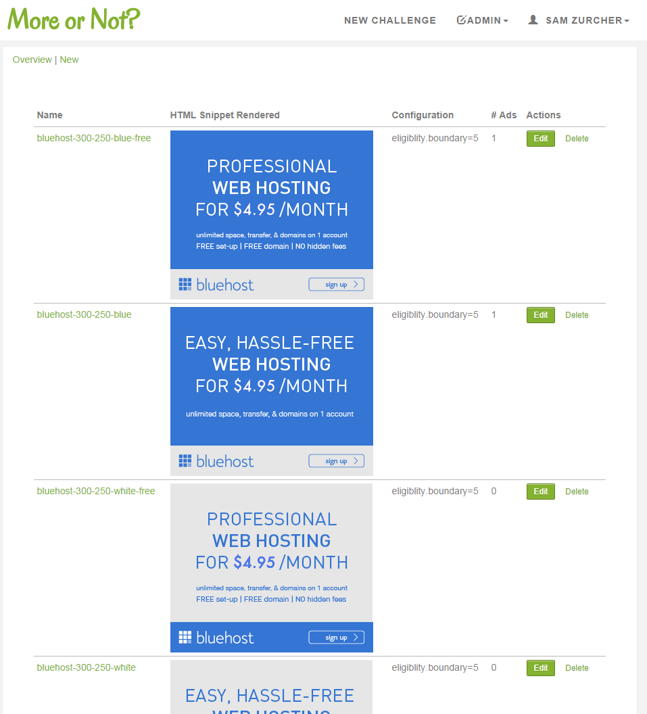
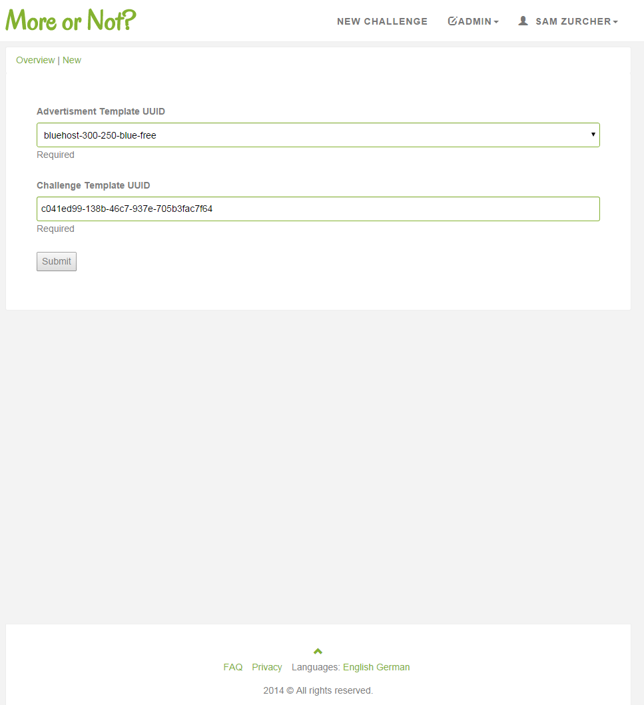
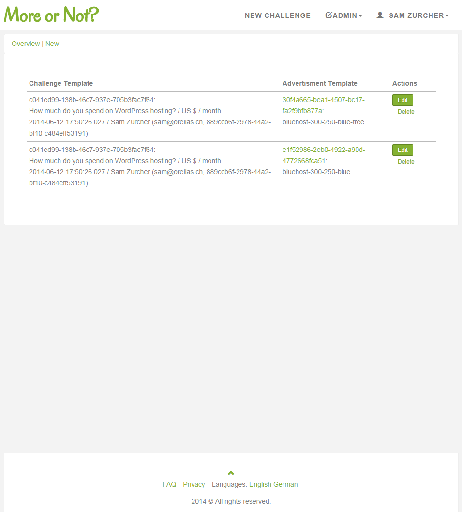

Documentation of the project MoreOrNot 2013-2014
The project MoreOrNot was inspired by Yao's Millionaires' Problem in which two millionaires want to know who has more money without revealing their actual wealth. MoreOrNot doesn't employ the classical protocol but rather acts as a trusted intermediary that allows the comparison of arbitrary comparable values between Facebook friends. This results in an offline comparison in which not both friends have to be online at the same time.
Started in 2013 as a side and playground project to gain experience with the Play 2 Framework and Facebook Integration, it developed into a more serious project with some ambition for a commercial push. The commercial ambition was based on the fact that if you can get two friends to compare something that they are passionate about, there is a chance that at least one of them might be inclined to act on the comparison result. Pairing this inclination with the matching affiliate offer or advertisement should result in a healthy conversion.
With the Snowden revelations and various other privacy related scandals though, it soon was obvious that very few people would be willing to share their sensitive information on an unknown platform. As a result, the project was put on hold.
Asking and Replying to Questions
1. Asking a Question
{kind=link}
A user coming to MoreOrNot is shown a page on which she can ask a question and at the same time provide her answer.
2. Login
{kind=link}
The user is next asked to log in. If she is using MoreOrNot for the first time, Facebook will ask her to allow MoreOrNot to view certain information. Otherwise, the login will proceed without further actions. In case the user is already logged in, this step is skipped.
{kind=link}
4. Select Friends
{kind=link}
From a list of Facebook friends, the user can select the ones that he wants to invite for the current challenge.
{kind=link}
6. Reply
{kind=link}
The invited friend receives a Facebook notification. When clicking on the link or when otherwise navigating to MoreOrNot, the invited friend is asked to reply to the challenge.
7. Result
{kind=link}
After the challenge has been replied to, the invited friend is shown the result. The initiating user receives an email informing her that the result of the challenge is awaiting her.
Challenges Overview
1. Overview
{kind=link}
The user has an overview of all the challenges that she has participated in. For each challenge, she sees how many times she had more and how many times less. Further, it is visible whether there are outstanding invitations.
{kind=link}
Administration
1. Edit Advertisement Template
{kind=link}
The admin user can create advertisement templates. An advertisement template contains a HTML snippet representing the advertisement to be displayed and configuration for when to show the advertisement. In the shown example, the advertisement should be shown in case the user has entered a value that is higher than 5.
2. View Advertisement Templates
{kind=link}
In the view mode, the advertisement is displayed including all additional configuration.
3. Edit Advertisement
{kind=link}
The admin user can pair an advertisement template with a challenge so that the advertisement represented by the advertisement template is shown next to the challenge in case the conditions are fulfilled.
4. View Advertisements
{kind=link}
In the view mode, the challenges and the advertisement templates are shown next to each other.
{kind=link}
{kind=link}
Implementation
- Play 2 Framework in the Java flavor.
- Hibernate JPA implementation for access to PostgreSQL.
- Authentication with Play Authenticate.
- Authorization with Deadbolt.
- Interaction with Facebook with Facebook4J.
- Styling with Twitter Bootstrap and a custom theme.
- CSS written in LESS.
People
- Idea / Concept
- Tshering Deki Zurcher, Sam Zurcher
- Implementation / Design
- Sam Zurcher